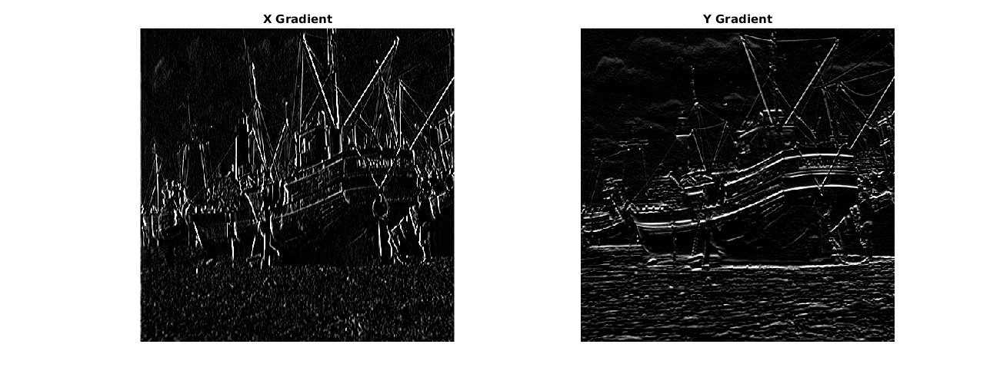
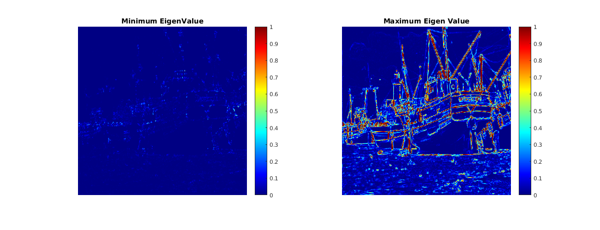
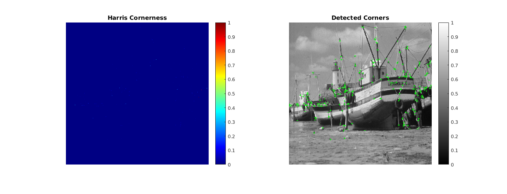

Q1. Harris Corner Detection
Corner detection on images. Done by Bhavesh Thakkar, Dhanvi Sreenivasan and Dhruv Ilesh Shah.
Contents
Harris Corner Detector
function [final,Gx,Gy,corner_detected,output_eig_min,output_eig_max]= myHarrisCornerDetector(img,std2,k) img = img - min(min(img)); img = img / max(max(img)); x_dim=size(img,1); y_dim=size(img,2); window_size=5; length=(window_size-1)/2; [Gx,Gy]=imgradientxy(img,'sobel'); Ix2=Gx.*Gx; Iy2=Gy.*Gy; Ixy=Gx.*Gy; output_Ix2=imgaussfilt(Ix2,std2,'Filtersize',5); output_Iy2=imgaussfilt(Iy2,std2,'Filtersize',5); output_Ixy=imgaussfilt(Ixy,std2,'Filtersize',5); Trace=output_Ix2 +output_Iy2 ; Det=(output_Ix2).*(output_Iy2)-(output_Ixy.^2); %Eigen Values for 2-D Matrices output_eig_min=(Trace/2)-((Trace/2).^2 - Det).^(1/2); output_eig_max=(Trace/2) +((Trace/2).^2 - Det).^(1/2); %Harris-Corner Detector thresh = 0.006; corner_detected=output_eig_min.*output_eig_max - k*(output_eig_min+output_eig_max).^2; corner_detected(corner_detected<thresh)=0; %Non-maximal suppression for i=2:2:x_dim-2 for j=2:2:y_dim-2 corner_detected(i-1:i+1,j-1:j+1)=(corner_detected(i-1:i+1,j-1:j+1)==... max(max(corner_detected(i-1:i+1,j-1:j+1))))*max(max(corner_detected(i-1:i+1,j-1:j+1))); end end %Inserting Markers [row,col]=find(corner_detected>0); marker=cat(2,col,row); final=insertMarker(img,marker,'color','green', 'Size', 3);
img=load('../data/boat.mat'); img=img.imageOrig; img=img/max(max(img)); std1=0.05; k=0.182; std2=0.5; img=imgaussfilt(img,std1); tic; [final,Gx,Gy,corner_detected,output_eig_min,output_eig_max]=myHarrisCornerDetector(img,std2,k); toc; %Gradient along X and Gradient along Y, using the 'Sobel' operator figure('name','ImageDerivatives','Position', [100 100 1300 500]); subplot(1,2,1),imshow(Gx); colormap(gray); title('X Gradient'); subplot(1,2,2),imshow(Gy); colormap(gray); title('Y Gradient'); %Minimum and Maximum Eigen-Value figure('name','EigenValues','Position', [100 100 1300 500]); subplot(1,2,1),imshow(output_eig_min/max(max(output_eig_min)));colorbar; colormap(jet); title('Minimum EigenValue'); subplot(1,2,2),imshow(output_eig_max);colorbar; colormap(jet); title('Maximum Eigen Value'); %Cornerness and Markers on the Final Image figure('name','HarrisCornerDetector','Position', [100 100 1300 500]); ax1=subplot(1,2,1),imshow(corner_detected/max(max(corner_detected)));colorbar; colormap(ax1,jet); title('Harris Cornerness'); ax2=subplot(1,2,2),imshow(final);colorbar; colormap(ax2,gray); title('Detected Corners'); {'Std_for_Smotheening', 'Std_for_Harris_Detection', 'k'; 0.05, 0.5, 0.182}
Elapsed time is 0.851922 seconds.
ax1 =
Axes with properties:
XLim: [0 1]
YLim: [0 1]
XScale: 'linear'
YScale: 'linear'
GridLineStyle: '-'
Position: [0.1300 0.1100 0.3347 0.8150]
Units: 'normalized'
Use GET to show all properties
ax2 =
Axes with properties:
XLim: [0 1]
YLim: [0 1]
XScale: 'linear'
YScale: 'linear'
GridLineStyle: '-'
Position: [0.5703 0.1100 0.3347 0.8150]
Units: 'normalized'
Use GET to show all properties
ans =
'Std_for_Smotheening' 'Std_for_Harris_De...' 'k'
[ 0.0500] [ 0.5000] [0.1820]
  